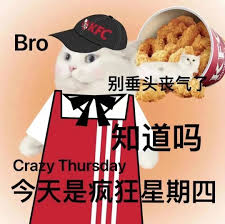

I choose speed because I feel empty and impatient.
I tell myself: “Anything is fine. Just arrive.”
The waiting is short.
[restaurant] -----> [me]
(almost no distance)
I eat quickly.
It is warm, but not comforting.
I finish and feel like I did not really eat—only refueled. 